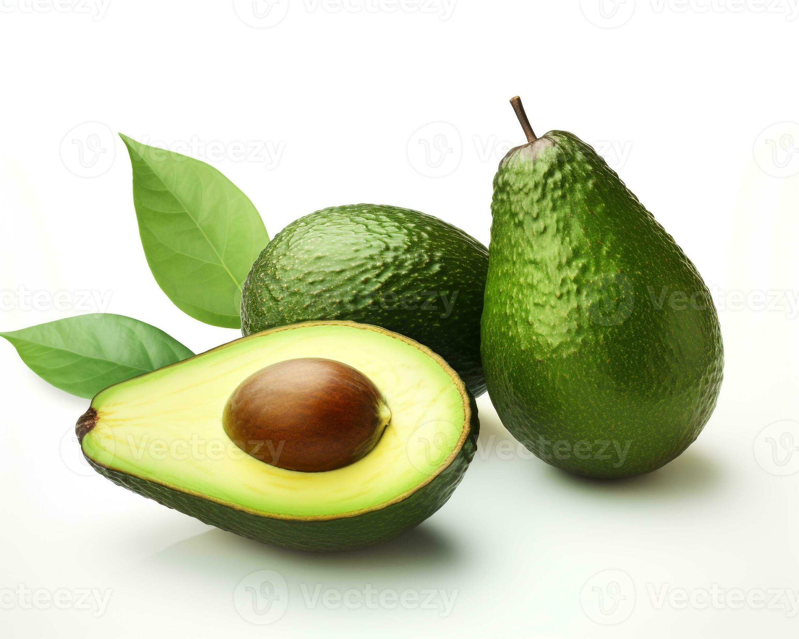
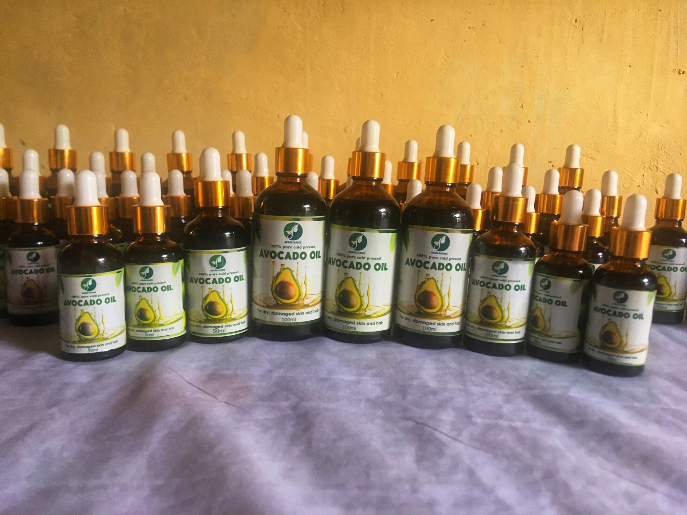
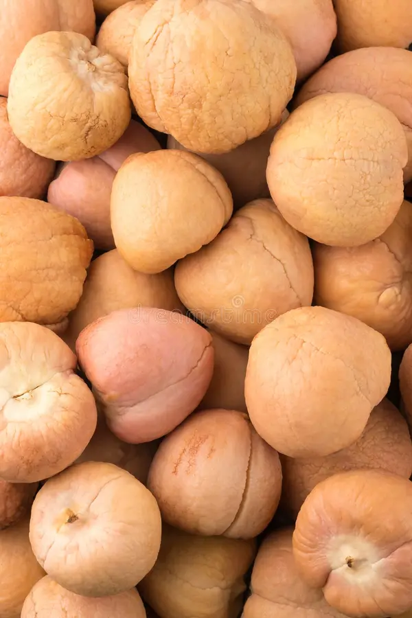

Partnering With Farmers
We source premium avocados directly from local farmers, creating reliable income while promoting sustainable farming practices.
Every Avoglow product begins with a farmer, transforms into premium wellness, and returns value back to communities. Because true beauty should never create waste.
Discover Our JourneySustainability isn't something we add. It's how Avoglow works from the beginning.

We source premium avocados directly from local farmers, creating reliable income while promoting sustainable farming practices.

Every avocado is carefully selected before entering our production process to guarantee premium quality.

Fresh avocado oil becomes nourishing products for healthier hair, skin and wellness.

Instead of throwing away avocado seeds, we recover and prepare them for a second life.

Recovered avocado seeds are transformed into our signature wellness tea packed with natural goodness.

By creating multiple products from one avocado, we increase farmer income while reducing environmental waste.